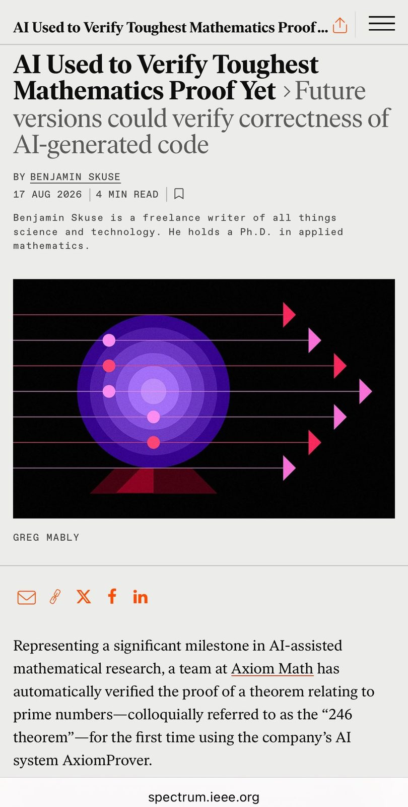
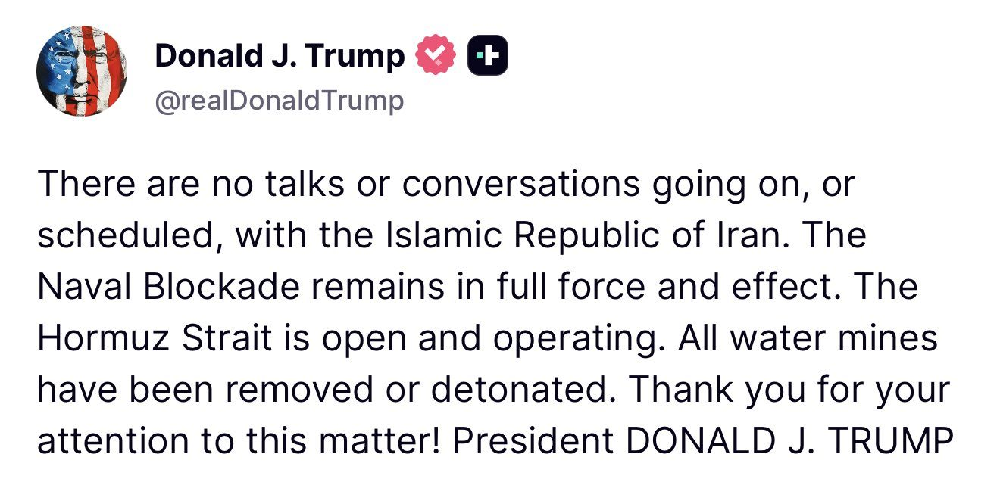
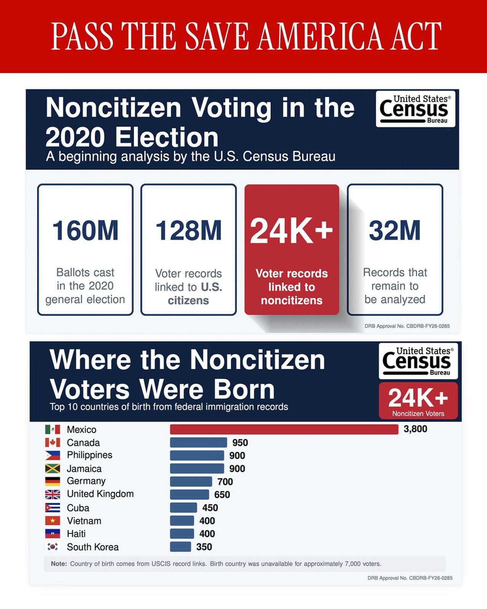
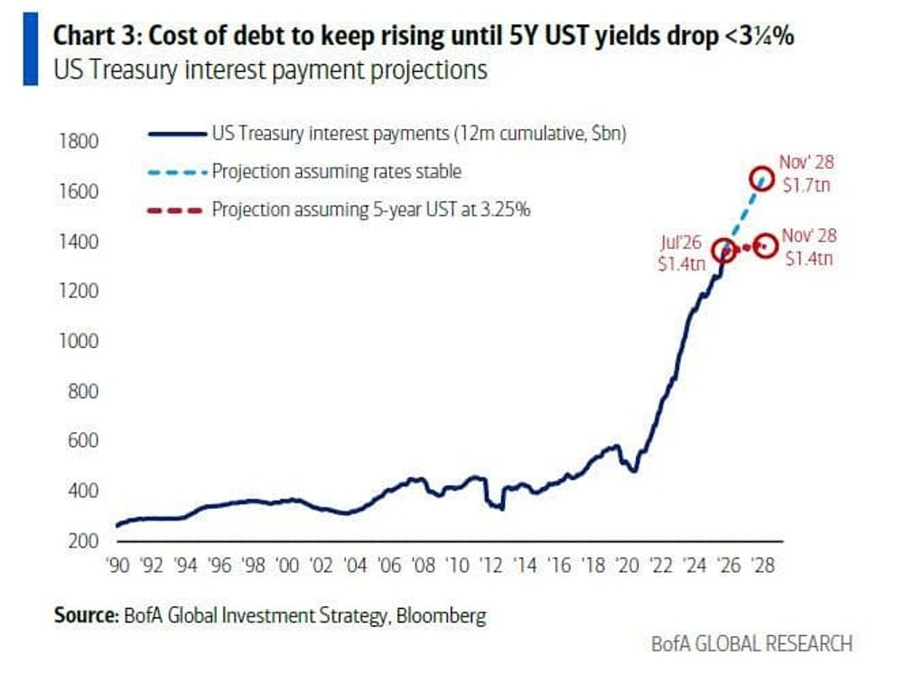
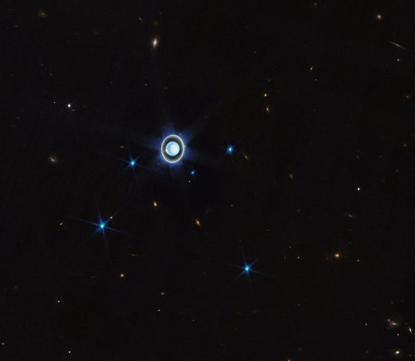
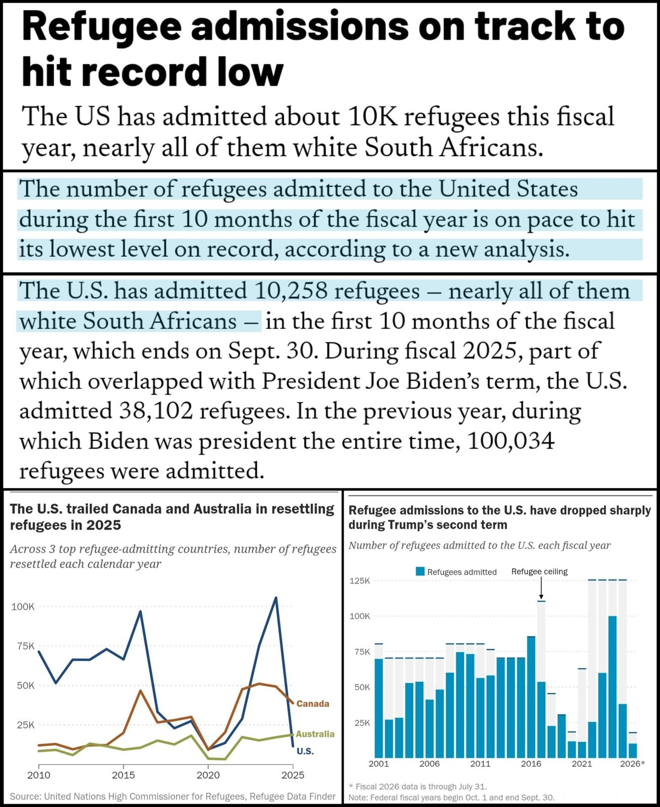

🚨 TODAY: The SEC proposed new rules, “Regulation Crypto Assets,” that would create a clear and fit-for-purpose framework for certain investment contracts involving crypto assets.
For years, anti-crypto armies, doomers, and decelerationists stifled innovation, regulating by enforcement and driving transformational technologies like blockchain, AI, and prediction markets overseas.
On August 20, the @CFTC is turning the page and charting a course for the new frontier of finance as innovators, builders, thinkers, and entrepreneurs descend upon Washington for the inaugural meeting of the Innovation Advisory Committee.
🚨NEW: The @SECGov has just formally proposed Regulation Crypto Assets, a new framework for crypto fundraising in the U.S.
The proposal would:
📌Allow certain offerings of up to $5M over four years or $75M annually without SEC registration
📌Create a conditional safe harbor for crypto assets once an issuer’s essential managerial efforts have ended
📌Preempt certain state securities registration requirements
It now enters a 60-day comment period.
With our new proposal, the SEC is taking the most historic step yet to modernize federal securities regulations for crypto assets.
As the Crypto Capital of the World, the U.S. must and will lead. Regulation Crypto Assets will ensure that we do. 🇺🇸
▶ Watch on XJeonbuk Bank is the first regional bank in Korea to deploy Ripple Payments, replacing multi-day SWIFT transfers with near real-time, 24/7 cross-border settlement for its business customers. Our third Korean partnership this year, after Kyobo Life Insurance and Kbank, partnering on custody, wallet infrastructure and payments.
Korea’s leading financial institutions are building with Ripple: https://on.ripple.com/4qkpj0m
BREAKING: The SEC announces new proposed rules that will create a "clear and fit-for purpose framework" for certain investment contracts involving crypto assets.
Details include:
1. The proposal follows the SEC's March 2026 interpretation clarifying how federal securities laws apply to certain crypto assets
2. The rules will address "long-standing barriers" to "capital formation and innovation" within domestic crypto asset markets
3. The proposed rules include 2 exemptions from the registration requirements of the Securities Act of 1933 specifically tailored to certain investment contracts involving crypto assets
4. The proposed rules also include a conditional safe harbor from the term "investment contract" in the definitions of "security" in the Securities Act of 1933 and the Securities Exchange Act of 1934
Framework for broader crypto adoption is rolling out.
“The biggest potential of tokenization isn't any single asset class; it's tokenization becoming foundational, underpinning fund structures, private assets and cash management alike"
- Roger Bayston, Head of Digital Assets Ecosystem Development explains @FranklnTempletn’s blockchain journey w/@BNBCHAIN
JUST IN: Robinhood CEO Vlad Tenev says we are at the beginning of a "tokenization supercycle" that will "eat the entire financial system."
🇯🇵 LATEST: Toyota Finance opens a ¥1 billion tokenized bond to retail investors through Toyota Wallet.
JUST IN: Visa $V seeks new crypto stablecoin partner to expand settlements globally.
After approx. 24 days at sea, the SpaceX Recovery team successfully guided Starship to a location just off the coast of Christmas Island. A team of SpaceX engineers is on their way to conduct additional analysis on the vehicle in calmer waters before attempting to return it to Starbase
1/ We’re delighted to announce a milestone for AI-assisted mathematics:
With AxiomProver, we've completed a machine-checkable formalization of the “BGP246 theorem,” the best-known bound on recurring small gaps between primes.
Closest math has come to the Twin Prime Conjecture.

Today we're releasing a preview of AIDO Cell, a world model of the human cell.
It simulates one cell across DNA, RNA, protein, through regulatory networks and whole-cell behavior. Not four models handing results to each other. One system.
▶ Watch on XAs @POTUS’s National Security Strategy emphasizes, technological capability has always been a critical component of national power, sovereignty, and security. Technological development has become the leading indicator of a nation’s economic and military strength, its ability to act independently on the global stage, and its potential for maintaining its particular way of life.
America has long been the world’s most prolific source of scientific breakthroughs. We must ensure we are equally formidable at turning those breakthroughs into strategic advantage.
This National Security Science and Technology Strategy aims to help focus more of the American research and development enterprise on the support of critical military capabilities, homeland defense and resilience, and economic security goals.
This country has the greatest technological innovation ecosystem on the planet. If we make clear the needs of the nation, there is no challenge our scientists, engineers, and innovators cannot overcome.
We are proud to release the world's first virtual cell -- a multi-modal, multi-scale, dynamic, and stateful world model of the cell, the first step toward an AI-driven Digital Organism (AIDO).
BREAKING: Scientists map the complete genome of an Antarctic plant that survives extreme cold, drought, & UV radiation — potentially paving the way for climate-resilient crops.
BREAKING: NASA astronauts begin a 6.5 hour spacewalk outside the International Space Station to replace an antenna.
There is a potential future that is super amazing is we all fight hard to achieve it
.@SecretaryWright at the Permian Basin in West Texas: "We can produce more oil and gas at less cost than we ever could before. In the past decade, oil production in this basin — America's largest oilfield — has quadrupled. Natural gas production has grown sevenfold.
In the Permian Basin, oil production has quadrupled and natural gas production has grown sevenfold since @POTUS’ first term.
@SecretaryWright: “We can produce more oil and gas at less cost than we ever could before — that’s grown American production." 🇺🇸💪🏻
▶ Watch on X🇺🇸 The US has decided to significantly increase the production of long-range Tomahawk cruise missiles, - Reuters
US Navy has signed a 7-year contract with Raytheon for $22.9 billion. Production of Tomahawk missiles is planned to be increased from current 60 to more than 1,000 units per year.
.@USDASDuffey "President Trump, Secretary Hegseth, and Chairman Caine have all stated clearly that WE ARE READY—the U.S. military can defeat any threat at the time and place of our choosing."
▶ Watch on X17 Iranians Charged with Conducting Massive Cyber Theft Campaign on Behalf of the Islamic Revolutionary Guard Corps and Other Iranian Entities
“The superseding indictment alleges that, at the behest of entities including the IRGC, these defendants hacked into universities and other research institutions worldwide, including the United States, stealing at least 31 terabytes of information and intellectual property of untold value,” said Assistant Attorney General John A. Eisenberg. “The National Security Division is committed to protecting the United States from such predators and will pursue those who perpetrate such crimes for as long as it takes to bring them to justice.”
Read more: https://www.justice.gov/opa/pr/17-iranians-charged-conducting-massive-cyber-theft-campaign-behalf-islamic-revolutionary

"The Census Bureau has begun checking the Voter Records from 2020 against their Citizenship Records. On the first 128,000,000 Voters, the Census Bureau proves that over 24,000 Noncitizens voted illegally! The Census Bureau is going to analyze the next 32,000,000 Voters, and this number will explode. I WON THE ELECTION! We must pass THE SAVE AMERICA ACT. Thank you for your attention to this matter!" - President DONALD J. TRUMP 🇺🇸

BREAKING: DOJ to send roughly 1,000 monitors to polling sites across the U.S. during the November midterm elections to watch for fraud.
BREAKING: US interest expense on the national debt hit a record $1.4 trillion over the last 12 months.
Since 2020, the cost of servicing US public debt has nearly TRIPLED.
If rates remain stable, interest payments are set to rise to $1.7 trillion by November 2028.
As a result, interest will surpass Social Security spending as the government's largest outlay for the first time.
America's debt bill is spiraling out of control.

JUST IN: The number of U.S. homebuyers has fallen to its lowest level ever recorded
A new look at Uranus: the James Webb Telescope has captured the planet and its moons 🪐
The James Webb Space Telescope has shared a detailed image of Uranus, clearly revealing its faint rings and five largest moons: Ariel, Miranda, Oberon, Titania, and Umbriel. Through the lens of the infrared camera, the planet appears not as a lifeless blue sphere, but as a dynamic world featuring a bright polar cap and storm clouds.

Refugee admissions are at an historic record low.
Over the past year, the Trump admin has admitted just 10,200 refugees so far — nearly all White South Africans — unlike the decades before Trump, when tens of thousands of third-world refugees were continuously let in.

Video of Israeli soldiers using medieval-style catapult to launch “fireballs” into south Lebanon’s farmland
Mykhailo Fedorov releases an explosive video statement on the eve of parliament vote in which a new defense minister was expected to be rubber stamped by Zelenskyy ruling party, calling for elections, raising alarm about corruption and warning that, “People cannot endlessly live in a state where they do not understand why certain decisions are made” — alluding to the opaque recent government reshuffle.
A key portion of his speech tonight:
Democracy cannot be held hostage by Russia.
We are fighting precisely because we want to remain a free European state.
Therefore, we must find a legal, safe, and realistic mechanism that will allow Ukraine to restore a full democratic process even amidst a prolonged war.
This is complex.
We need to guarantee the voting rights of our military.
Of millions of Ukrainians abroad.
Of people in frontline regions.
We need to ensure the security of the electoral process, the independence of institutions, and trust in the outcome.
https://youtu.be/QGFTuUxZB54?si=JJwZ3YXBGUoeUkr2
BREAKING: Transgender woman convicted of crimes tied to attempted assassination of Treasury Secretary Scott Bessent is sentenced to 73 months -FOX
NY state forced to fire Salvadorans, Haitians working for government after TPS terminated
#BREAKING: U.S. sanctions the president of the International Criminal Court (ICC).